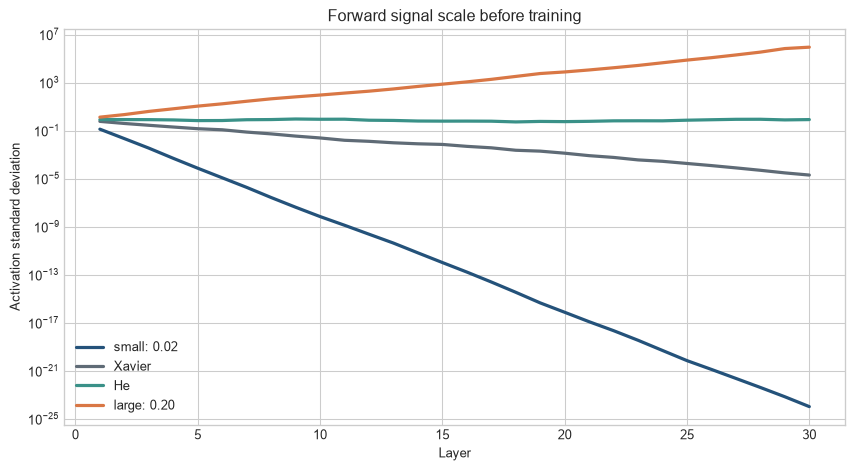
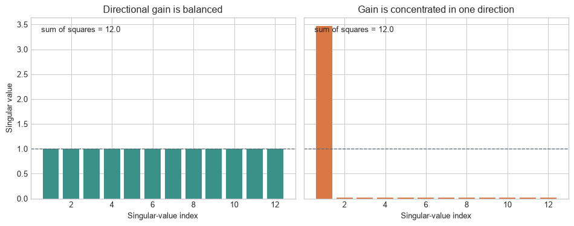

Before a network sees its first training batch, every weight already has a value. Those starting values cannot contain a learned pattern, but they determine whether different hidden units begin differently and whether information can travel through the network at all. If all units start alike, they remain alike. If the values are too small or too large, repeated layers can erase or amplify the signal before learning has a chance to correct it.
Initialisation is the choice of those starting values. It is not a shortcut to the final model. Its practical test is simple: before training, does this implemented network produce distinct activations and usable gradients from one end to the other?
A diagnostic experiment
The chapter propagates a batch of simple random inputs through 30 layers, each 128 units wide. The network is deliberately deeper than a practical toy task needs because changes in scale become visible. Biases start at zero and ReLU follows each matrix multiplication.
The first chart tracks how much the activation values differ from one another after each layer. A roughly horizontal trajectory means that distinct inputs remain distinguishable at this diagnostic stage. A steep decline or rise identifies a problem before the optimiser has taken a single step.
Code
import numpy as npimport matplotlib.pyplot as pltplt.style.use("seaborn-v0_8-whitegrid")blue, teal, orange, purple, grey ="#24527a", "#3a9188", "#d97745", "#7a5195", "#5f6b76"rng = np.random.default_rng(71)width, depth, batch =128, 30, 256inputs = rng.normal(size=(batch, width))def forward_statistics(scale): h=inputs.copy(); standard_deviations=[]; active_fractions=[]; weights=[]; masks=[]for _ inrange(depth): W=rng.normal(0,scale,size=(width,width)); z=h@W.T; h=np.maximum(0,z) standard_deviations.append(h.std()); active_fractions.append((z>0).mean()) weights.append(W); masks.append(z>0)return np.array(standard_deviations),np.array(active_fractions),weights,masksscales={"small: 0.02":0.02,"Xavier":np.sqrt(1/width),"He":np.sqrt(2/width),"large: 0.20":0.20}scale_results={name:forward_statistics(scale) for name,scale in scales.items()}fig,ax=plt.subplots(figsize=(9,5))for (name,result),colour inzip(scale_results.items(),[blue,grey,teal,orange]): ax.plot(range(1,depth+1),result[0],label=name,color=colour,linewidth=2.4)ax.set_yscale("log"); ax.set_xlabel("Layer"); ax.set_ylabel("Activation standard deviation")ax.set_title("Forward signal scale before training"); ax.legend()plt.tight_layout(); plt.show()

Figure 12.1: Weight scale determines whether activation variation vanishes, remains usable, or explodes across an untrained ReLU network.
The small initialisation progressively removes variation. The large initialisation amplifies it. Xavier preserves variance for linear or approximately symmetric activations but loses scale under repeated ReLU gating. He initialisation compensates for that gating in this idealised setting and keeps the signal closer to its starting scale.
Initialisation and gradient flow. Initialisation sets the parameter values before training. Gradient flow describes how derivative signals propagate through the resulting computation. Both depend on architecture, activation, normalisation, precision, and the optimiser.
Level 1 - Intuition
Hidden units need different starting points
If every hidden unit starts with identical incoming weights and bias, it produces the same value for every observation. Backpropagation then gives those units identical gradients. They remain copies after the update. A layer with 128 nominal units can behave like one repeated unit.
Random initialisation breaks this symmetry. The randomness does not encode useful features; it gives units different starting directions so training can specialise them. The distribution still needs an appropriate scale. Symmetry breaking and scale preservation are separate requirements.
Figure 12.2: Identical initial weights produce identical hidden units, while random initial weights create distinct starting responses.
The zero-weight panel contains no distinction among units or observations. Random weights create different responses. Setting the final layer to zero can be useful in specific residual constructions, but setting every weight in an ordinary multilayer network to zero prevents hidden-unit differentiation.
Deep networks repeatedly rescale information
One layer can shrink a signal without destroying it. Thirty layers can multiply that shrinkage until values become numerically negligible. The same compounding applies to growth. Initialisation aims to keep useful differences within a workable range long enough for learning to begin.
Gradient flow is the reverse view of the same chain
Backpropagation multiplies an arriving gradient by activation derivatives and weight matrices. ReLU blocks coordinates whose pre-activations are negative. Sigmoid and tanh transmit small derivatives when saturated. Weight scale then shrinks or amplifies what remains. A usable forward signal does not guarantee a usable backward signal, so both must be measured.
The immediate checks are whether units begin differently and whether forward and backward quantities remain in a workable range. Level 2 traces the operations that change those quantities and turns them into a short dry-run diagnostic.
Level 2 - Mechanics
Each layer changes the scale of what it receives
At each layer, the incoming values are multiplied by weights, added together, and passed through an activation. The scale therefore depends on the incoming values, the number and spread of the weights, and the activation itself. ReLU sets roughly half of symmetric pre-activations to zero at initialisation. Tanh compresses large magnitudes towards \(-1\) and \(1\).
The following experiment applies tanh after one matrix multiplication and measures the fraction of pre-activations with \(|z|>2\), where tanh is already relatively flat.
Figure 12.3: Increasing initial weight scale pushes more tanh pre-activations into low-slope saturated regions.
Large initial weights can place many tanh units where local derivatives are small. ReLU does not saturate on its positive side, but large positive values can still create exploding activations and gradients.
Backward gradients can be inspected layer by layer
Figure 12.4: The same initialisation scales that alter forward signals also alter gradient magnitudes across depth.
The horizontal direction follows backpropagation from layer 30 towards layer 1. Small scales leave early layers with negligible gradients; large scales amplify them. He scaling is designed to preserve variance for ReLU under simplifying assumptions, not to guarantee identical gradients in every realised network.
Diagnostics should precede expensive training
A dry forward and backward pass can record per-layer activation mean and standard deviation, zero or saturation fraction, gradient norm, and non-finite values. These checks distinguish a network that cannot transmit information at step zero from one that becomes unstable only after optimiser updates.
The observed trajectories need a reference calculation: otherwise a named initialiser can be mistaken for a guarantee. Level 3 derives the variance rules and then connects their assumptions to the tensor operations used in code.
Level 3 - Mathematics & Code
Variance propagation gives the Xavier rule
Assume independent, zero-mean inputs and weights, \(n_{\mathrm{in}}\) incoming connections, and no activation. Then
the He rule developed for rectifier networks (He et al. 2015). The derivation assumes independence and idealised distributions. Convolutional sharing, residual additions, attention, gating, and normalisation alter the calculation.
Code
fan_in,fan_out=128,256xavier_std=np.sqrt(2/(fan_in+fan_out)); he_std=np.sqrt(2/fan_in)print(f"Xavier standard deviation: {xavier_std:.4f}")print(f"He standard deviation: {he_std:.4f}")
Xavier standard deviation: 0.0722
He standard deviation: 0.1250
The observed standard deviation is close to the He target but not exact because the matrix is a finite random sample. fan_in prioritises forward variance; fan_out prioritises backward variance. The activation argument determines the gain and should match the operation that follows.
Fan counts follow the implemented tensor operation
The symbols \(n_{\mathrm{in}}\) and \(n_{\mathrm{out}}\) count the independent inputs contributing to an output and the outputs receiving an input. For a dense layer with a weight tensor shaped out_features by in_features, these counts are the two dimensions. For a two-dimensional convolution, each output combines in_channels inputs across every kernel position, so
A grouped convolution uses fewer input channels per group. A transposed convolution stores and applies its tensor differently. The correct fan therefore follows the operation, not a guess based on which tensor dimension appears first.
This calculation is part of the model specification. Two implementations can both claim to use He initialisation while using different effective fans because their kernels, groups, or tensor conventions differ.
Code
# Hooks can collect per-layer statistics in a dry run.network=nn.Sequential(*sum(([nn.Linear(64,64),nn.ReLU()] for _ inrange(8)),[]))records=[]hooks=[]for name,module in network.named_modules():ifisinstance(module,(nn.Linear,nn.ReLU)): hooks.append(module.register_forward_hook(lambda mod,inp,out,n=name: records.append((n,out.mean().item(),out.std().item()))))_ = network(torch.randn(32,64))for hook in hooks: hook.remove()print(records[:4])
Hooks observe actual tensors rather than relying on the intended formula. Similar backward hooks or explicit parameter-gradient summaries can locate the first layer at which gradients vanish, explode, or become non-finite.
Level 4 - Research & Systems
Variance preservation is not the complete objective
Two initialisations can preserve marginal variance while transforming directions differently. Singular values of layer Jacobians describe how perturbations are stretched or contracted. Work on deep linear networks shows that orthogonal starting conditions can produce different learning dynamics from generic random matrices (Saxe, McClelland, and Ganguli 2014). These results are informative but do not transfer unchanged to nonlinear residual architectures.
Code
dimension=12balanced=np.ones(dimension)concentrated=np.array([np.sqrt(dimension-11*0.02**2)]+[0.02]*11)fig,axes=plt.subplots(1,2,figsize=(10,4),sharey=True)for ax,values,title,colour inzip( axes,[balanced,concentrated], ["Directional gain is balanced","Gain is concentrated in one direction"], [teal,orange]): ax.bar(np.arange(1,dimension+1),values,color=colour) ax.axhline(1,color=grey,linewidth=1,linestyle="--") ax.set_title(title); ax.set_xlabel("Singular-value index") ax.text(.04,.92,f"sum of squares = {np.sum(values**2):.1f}",transform=ax.transAxes)axes[0].set_ylabel("Singular value")plt.tight_layout(); plt.show()

Figure 12.5: Two transformations can have the same total squared gain while preserving directions very differently.
Both panels have the same sum of squared singular values and therefore the same Frobenius norm. Yet the right-hand transformation amplifies one direction and almost removes eleven others. A single activation standard deviation or gradient norm can miss this directional collapse. Singular-value summaries add evidence about whether many directions remain usable, although computing full spectra is usually too expensive for every layer of a large model.
Residual and normalised architectures alter the path
Residual connections provide an identity route alongside learned transformations. Normalisation rescales intermediate tensors. Both reduce dependence on the simple plain-network calculation, but neither makes initialisation irrelevant. Residual branches may require depth-dependent scaling, and normalisation parameters themselves need initial values. Chapter 12 treats normalisation directly.
Transformer stability depends on the placement of normalisation, residual scaling, attention-logit scale, feed-forward width, and precision. Copying a He rule from a ReLU multilayer perceptron is therefore insufficient documentation for a Transformer initialisation scheme.
Numerical precision sets practical limits
Exploding activations can overflow low-precision formats, while tiny gradients can underflow. Mixed-precision loss scaling helps with small backward values but does not repair a forward pass that has already produced infinities. Distributed reductions can expose non-finite gradients only after communication, wasting a full step unless local checks occur earlier.
An initialisation audit records realised statistics
An audit should record the distribution, scale, fan convention, activation gain, bias rule, residual scaling, normalisation parameters, random seed, and parameters receiving special treatment. It should also report realised activation and gradient statistics by depth across representative batches, including saturation, zero fractions, singular-value summaries where relevant, and non-finite counts.
The formula is a starting hypothesis. The dry-run measurements show whether that hypothesis holds for the implemented architecture.
Common misconceptions
Initial weights should all be zero so training starts neutrally. Identical hidden units receive identical gradients and remain symmetric.
Randomness alone is sufficient. Its scale and distribution affect signal propagation.
Xavier and He initialisation are interchangeable. They encode different activation assumptions.
He initialisation guarantees stable training. It preserves variance approximately under simplifying assumptions.
Biases must always be random. Zero biases commonly preserve weight-driven symmetry breaking.
A stable forward pass proves gradients are stable. Forward and backward Jacobians must both be inspected.
Vanishing gradients mean every gradient is exactly zero. They may be non-zero but too small to produce useful updates.
ReLU eliminates vanishing gradients. Negative ReLUs block gradients and small weights can still shrink them.
Normalisation removes the need for initialisation. It changes but does not remove the starting-scale problem.
Loss scaling fixes exploding activations. It addresses small backward values, not invalid forward tensors.
One seed is enough to validate an initialisation. Realised matrices and training outcomes vary across seeds.
Exercises
Explain why zero initialisation preserves hidden-unit symmetry.
Calculate Xavier and He standard deviations for fan-in 256 and fan-out 512.
Derive the forward variance approximation for an affine layer.
Explain the factor of two in He initialisation.
Reproduce the 30-layer experiment with tanh.
Compare normal and uniform Xavier initialisation.
Change width and test whether the variance rule still holds empirically.
Plot the fraction of inactive ReLUs by layer.
Record activation and gradient statistics for the Chapter 8 network.
Deliberately create exploding gradients and locate the first unstable layer.
Compare fan-in and fan-out modes in PyTorch.
Initialise an output layer to zero and explain when this differs from zeroing every layer.
Test orthogonal initialisation against He normal across several seeds.
Explain how a residual path changes gradient propagation.
Design an initialisation audit for a mixed-precision Transformer.
Calculate fan-in and fan-out for a convolution with 32 input channels, 96 output channels, and a \(5\times5\) kernel.
Explain why two Jacobians with equal Frobenius norms can have different gradient-flow behaviour.
Extend the singular-spectrum example to three layers and compare the products of the balanced and concentrated spectra.
Summary
Initialisation must break hidden-unit symmetry and set a workable signal scale. Products of weights and activation derivatives can make activations and gradients vanish or explode across depth. Xavier scaling balances fan-in and fan-out for approximately linear or symmetric activations; He scaling compensates for ReLU gating.
These rules are approximations. Residual paths, normalisation, gating, convolution, attention, precision, and optimiser dynamics change the realised behaviour. Per-layer activation and gradient measurements on a dry pass provide stronger evidence than the initialisation name alone.
Looking ahead
Chapter 12 examines normalisation. Initialisation controls the starting distribution; normalisation repeatedly transforms intermediate distributions during training and inference.
Further reading
Xavier initialisation and saturation are analysed by Glorot and Bengio (2010). Rectifier-aware initialisation is developed by He et al. (2015). Orthogonal starting conditions and learning dynamics in deep linear networks are analysed by Saxe, McClelland, and Ganguli (2014).
Glorot, Xavier, and Yoshua Bengio. 2010. “Understanding the Difficulty of Training Deep Feedforward Neural Networks.” In Proceedings of the Thirteenth International Conference on Artificial Intelligence and Statistics, 249–56.
He, Kaiming, Xiangyu Zhang, Shaoqing Ren, and Jian Sun. 2015. “Delving Deep into Rectifiers: Surpassing Human-Level Performance on ImageNet Classification.” In Proceedings of the IEEE International Conference on Computer Vision, 1026–34. https://doi.org/10.1109/ICCV.2015.123.
Saxe, Andrew M., James L. McClelland, and Surya Ganguli. 2014. “Exact Solutions to the Nonlinear Dynamics of Learning in Deep Linear Neural Networks.” In International Conference on Learning Representations. https://arxiv.org/abs/1312.6120.
Source Code
---title: "Initialisation and Gradient Flow"subtitle: "Setting the scale before learning begins"---## The problemBefore a network sees its first training batch, every weight already has a value. Those starting values cannot contain a learned pattern, but they determine whether different hidden units begin differently and whether information can travel through the network at all. If all units start alike, they remain alike. If the values are too small or too large, repeated layers can erase or amplify the signal before learning has a chance to correct it.Initialisation is the choice of those starting values. It is not a shortcut to the final model. Its practical test is simple: before training, does this implemented network produce distinct activations and usable gradients from one end to the other?### A diagnostic experimentThe chapter propagates a batch of simple random inputs through 30 layers, each 128 units wide. The network is deliberately deeper than a practical toy task needs because changes in scale become visible. Biases start at zero and ReLU follows each matrix multiplication.The first chart tracks how much the activation values differ from one another after each layer. A roughly horizontal trajectory means that distinct inputs remain distinguishable at this diagnostic stage. A steep decline or rise identifies a problem before the optimiser has taken a single step.```{python}#| label: fig-initial-scale#| fig-cap: "Weight scale determines whether activation variation vanishes, remains usable, or explodes across an untrained ReLU network."#| fig-alt: "A log-scale line chart compares activation standard deviation across thirty layers for small, Xavier, He, and large random initialisation scales."import numpy as npimport matplotlib.pyplot as pltplt.style.use("seaborn-v0_8-whitegrid")blue, teal, orange, purple, grey ="#24527a", "#3a9188", "#d97745", "#7a5195", "#5f6b76"rng = np.random.default_rng(71)width, depth, batch =128, 30, 256inputs = rng.normal(size=(batch, width))def forward_statistics(scale): h=inputs.copy(); standard_deviations=[]; active_fractions=[]; weights=[]; masks=[]for _ inrange(depth): W=rng.normal(0,scale,size=(width,width)); z=h@W.T; h=np.maximum(0,z) standard_deviations.append(h.std()); active_fractions.append((z>0).mean()) weights.append(W); masks.append(z>0)return np.array(standard_deviations),np.array(active_fractions),weights,masksscales={"small: 0.02":0.02,"Xavier":np.sqrt(1/width),"He":np.sqrt(2/width),"large: 0.20":0.20}scale_results={name:forward_statistics(scale) for name,scale in scales.items()}fig,ax=plt.subplots(figsize=(9,5))for (name,result),colour inzip(scale_results.items(),[blue,grey,teal,orange]): ax.plot(range(1,depth+1),result[0],label=name,color=colour,linewidth=2.4)ax.set_yscale("log"); ax.set_xlabel("Layer"); ax.set_ylabel("Activation standard deviation")ax.set_title("Forward signal scale before training"); ax.legend()plt.tight_layout(); plt.show()```The small initialisation progressively removes variation. The large initialisation amplifies it. Xavier preserves variance for linear or approximately symmetric activations but loses scale under repeated ReLU gating. He initialisation compensates for that gating in this idealised setting and keeps the signal closer to its starting scale.::: {.concept-box .concept-core #concept-initialisation data-term="Initialisation and gradient flow" data-domain="Training and evaluation"}**Initialisation and gradient flow.** Initialisation sets the parameter values before training. Gradient flow describes how derivative signals propagate through the resulting computation. Both depend on architecture, activation, normalisation, precision, and the optimiser.:::## Level 1 - Intuition### Hidden units need different starting pointsIf every hidden unit starts with identical incoming weights and bias, it produces the same value for every observation. Backpropagation then gives those units identical gradients. They remain copies after the update. A layer with 128 nominal units can behave like one repeated unit.Random initialisation breaks this symmetry. The randomness does not encode useful features; it gives units different starting directions so training can specialise them. The distribution still needs an appropriate scale. Symmetry breaking and scale preservation are separate requirements.```{python}#| label: fig-symmetry-breaking#| fig-cap: "Identical initial weights produce identical hidden units, while random initial weights create distinct starting responses."#| fig-alt: "Two heatmaps compare outputs from six hidden units under identical zero weights and under small random weights for eight observations."small_inputs=rng.normal(size=(8,4))zero_outputs=small_inputs@np.zeros((6,4)).Trandom_outputs=small_inputs@rng.normal(0,0.35,size=(6,4)).Tfig,axes=plt.subplots(1,2,figsize=(10,4))for ax,data,title inzip(axes,[zero_outputs,random_outputs],["Identical initial weights","Random initial weights"]): image=ax.imshow(data,cmap="RdBu_r",aspect="auto",vmin=-2,vmax=2) ax.set_title(title); ax.set_xlabel("Hidden unit"); ax.set_ylabel("Observation")fig.colorbar(image,ax=axes.ravel().tolist(),label="pre-activation",shrink=0.8)plt.show()```The zero-weight panel contains no distinction among units or observations. Random weights create different responses. Setting the final layer to zero can be useful in specific residual constructions, but setting every weight in an ordinary multilayer network to zero prevents hidden-unit differentiation.### Deep networks repeatedly rescale informationOne layer can shrink a signal without destroying it. Thirty layers can multiply that shrinkage until values become numerically negligible. The same compounding applies to growth. Initialisation aims to keep useful differences within a workable range long enough for learning to begin.### Gradient flow is the reverse view of the same chainBackpropagation multiplies an arriving gradient by activation derivatives and weight matrices. ReLU blocks coordinates whose pre-activations are negative. Sigmoid and tanh transmit small derivatives when saturated. Weight scale then shrinks or amplifies what remains. A usable forward signal does not guarantee a usable backward signal, so both must be measured.The immediate checks are whether units begin differently and whether forward and backward quantities remain in a workable range. Level 2 traces the operations that change those quantities and turns them into a short dry-run diagnostic.## Level 2 - Mechanics### Each layer changes the scale of what it receivesAt each layer, the incoming values are multiplied by weights, added together, and passed through an activation. The scale therefore depends on the incoming values, the number and spread of the weights, and the activation itself. ReLU sets roughly half of symmetric pre-activations to zero at initialisation. Tanh compresses large magnitudes towards $-1$ and $1$.The following experiment applies tanh after one matrix multiplication and measures the fraction of pre-activations with $|z|>2$, where tanh is already relatively flat.```{python}#| label: fig-saturation#| fig-cap: "Increasing initial weight scale pushes more tanh pre-activations into low-slope saturated regions."#| fig-alt: "Histograms compare pre-activation distributions for three weight scales, with shaded regions beyond minus two and plus two and saturation percentages in the titles."fig,axes=plt.subplots(1,3,figsize=(12,3.8),sharex=True,sharey=True)for ax,scale,colour inzip(axes,[0.03,0.09,0.25],[blue,teal,orange]): W=rng.normal(0,scale,size=(width,width)); z=(inputs@W.T).ravel(); fraction=(np.abs(z)>2).mean() ax.hist(z,bins=60,color=colour,alpha=0.8,density=True) ax.axvspan(-8,-2,color=grey,alpha=0.12); ax.axvspan(2,8,color=grey,alpha=0.12) ax.set_title(f"scale {scale}: {fraction:.0%} beyond |z| > 2"); ax.set_xlabel("pre-activation")axes[0].set_ylabel("density"); plt.tight_layout(); plt.show()```Large initial weights can place many tanh units where local derivatives are small. ReLU does not saturate on its positive side, but large positive values can still create exploding activations and gradients.### Backward gradients can be inspected layer by layer```{python}#| label: fig-gradient-flow#| fig-cap: "The same initialisation scales that alter forward signals also alter gradient magnitudes across depth."#| fig-alt: "A log-scale line chart shows gradient standard deviation from the output towards the input for small, Xavier, He, and large initialisation scales."fig,ax=plt.subplots(figsize=(9,5))for (name,result),colour inzip(scale_results.items(),[blue,grey,teal,orange]): _,_,weights,masks=result; gradient=rng.normal(size=(batch,width)); values=[]for W,mask inzip(weights[::-1],masks[::-1]): gradient=(gradient*mask)@W values.append(gradient.std()) ax.plot(range(depth,0,-1),values,label=name,color=colour,linewidth=2.4)ax.set_yscale("log"); ax.set_xlabel("Layer receiving gradient"); ax.set_ylabel("Gradient standard deviation")ax.set_title("Backward gradient scale before training"); ax.legend()plt.tight_layout(); plt.show()```The horizontal direction follows backpropagation from layer 30 towards layer 1. Small scales leave early layers with negligible gradients; large scales amplify them. He scaling is designed to preserve variance for ReLU under simplifying assumptions, not to guarantee identical gradients in every realised network.### Diagnostics should precede expensive trainingA dry forward and backward pass can record per-layer activation mean and standard deviation, zero or saturation fraction, gradient norm, and non-finite values. These checks distinguish a network that cannot transmit information at step zero from one that becomes unstable only after optimiser updates.The observed trajectories need a reference calculation: otherwise a named initialiser can be mistaken for a guarantee. Level 3 derives the variance rules and then connects their assumptions to the tensor operations used in code.## Level 3 - Mathematics & Code### Variance propagation gives the Xavier ruleAssume independent, zero-mean inputs and weights, $n_{\mathrm{in}}$ incoming connections, and no activation. Then$$\operatorname{Var}(z_j)\approx n_{\mathrm{in}}\operatorname{Var}(W_{ji})\operatorname{Var}(h_i).$$Preserving forward variance suggests $\operatorname{Var}(W)=1/n_{\mathrm{in}}$. Balancing forward and backward considerations yields the Xavier compromise$$\operatorname{Var}(W)=\frac{2}{n_{\mathrm{in}}+n_{\mathrm{out}}}.$$@glorot2010 connect activation saturation and initialisation scale to training difficulty in deep feed-forward networks.### ReLU changes the variance calculationFor a symmetric pre-activation distribution, ReLU discards approximately half the values. Compensating gives$$\operatorname{Var}(W)\approx\frac{2}{n_{\mathrm{in}}},$$the He rule developed for rectifier networks [@he2015]. The derivation assumes independence and idealised distributions. Convolutional sharing, residual additions, attention, gating, and normalisation alter the calculation.```{python}fan_in,fan_out=128,256xavier_std=np.sqrt(2/(fan_in+fan_out)); he_std=np.sqrt(2/fan_in)print(f"Xavier standard deviation: {xavier_std:.4f}")print(f"He standard deviation: {he_std:.4f}")```### PyTorch makes the chosen convention explicit```{python}import torchfrom torch import nnlayer=nn.Linear(128,256)nn.init.kaiming_normal_(layer.weight,mode="fan_in",nonlinearity="relu")nn.init.zeros_(layer.bias)print(layer.weight.std().item(), layer.bias.abs().max().item())```The observed standard deviation is close to the He target but not exact because the matrix is a finite random sample. `fan_in` prioritises forward variance; `fan_out` prioritises backward variance. The activation argument determines the gain and should match the operation that follows.### Fan counts follow the implemented tensor operationThe symbols $n_{\mathrm{in}}$ and $n_{\mathrm{out}}$ count the independent inputs contributing to an output and the outputs receiving an input. For a dense layer with a weight tensor shaped `out_features` by `in_features`, these counts are the two dimensions. For a two-dimensional convolution, each output combines `in_channels` inputs across every kernel position, so$$n_{\mathrm{in}}=C_{\mathrm{in}}k_hk_w,\qquadn_{\mathrm{out}}=C_{\mathrm{out}}k_hk_w.$$A grouped convolution uses fewer input channels per group. A transposed convolution stores and applies its tensor differently. The correct fan therefore follows the operation, not a guess based on which tensor dimension appears first.```{python}examples=[ ("Linear 128 -> 256",128,256), ("Conv 3 -> 64, kernel 3x3",3*3*3,64*3*3), ("Grouped conv 64 -> 64, 8 groups, 3x3",(64//8)*3*3,(64//8)*3*3),]for name,fan_in_value,fan_out_value in examples: xavier=np.sqrt(2/(fan_in_value+fan_out_value)) he=np.sqrt(2/fan_in_value)print(f"{name:43s} fan_in={fan_in_value:4d} fan_out={fan_out_value:4d} "f"Xavier std={xavier:.4f} He std={he:.4f}")```This calculation is part of the model specification. Two implementations can both claim to use He initialisation while using different effective fans because their kernels, groups, or tensor conventions differ.```{python}# Hooks can collect per-layer statistics in a dry run.network=nn.Sequential(*sum(([nn.Linear(64,64),nn.ReLU()] for _ inrange(8)),[]))records=[]hooks=[]for name,module in network.named_modules():ifisinstance(module,(nn.Linear,nn.ReLU)): hooks.append(module.register_forward_hook(lambda mod,inp,out,n=name: records.append((n,out.mean().item(),out.std().item()))))_ = network(torch.randn(32,64))for hook in hooks: hook.remove()print(records[:4])```Hooks observe actual tensors rather than relying on the intended formula. Similar backward hooks or explicit parameter-gradient summaries can locate the first layer at which gradients vanish, explode, or become non-finite.## Level 4 - Research & Systems### Variance preservation is not the complete objectiveTwo initialisations can preserve marginal variance while transforming directions differently. Singular values of layer Jacobians describe how perturbations are stretched or contracted. Work on deep linear networks shows that orthogonal starting conditions can produce different learning dynamics from generic random matrices [@saxe2014]. These results are informative but do not transfer unchanged to nonlinear residual architectures.```{python}#| label: fig-singular-spectrum#| fig-cap: "Two transformations can have the same total squared gain while preserving directions very differently."#| fig-alt: "Two bar charts compare a flat singular-value spectrum with a concentrated spectrum. Both have the same sum of squared singular values, but the concentrated transformation nearly removes most directions."dimension=12balanced=np.ones(dimension)concentrated=np.array([np.sqrt(dimension-11*0.02**2)]+[0.02]*11)fig,axes=plt.subplots(1,2,figsize=(10,4),sharey=True)for ax,values,title,colour inzip( axes,[balanced,concentrated], ["Directional gain is balanced","Gain is concentrated in one direction"], [teal,orange]): ax.bar(np.arange(1,dimension+1),values,color=colour) ax.axhline(1,color=grey,linewidth=1,linestyle="--") ax.set_title(title); ax.set_xlabel("Singular-value index") ax.text(.04,.92,f"sum of squares = {np.sum(values**2):.1f}",transform=ax.transAxes)axes[0].set_ylabel("Singular value")plt.tight_layout(); plt.show()```Both panels have the same sum of squared singular values and therefore the same Frobenius norm. Yet the right-hand transformation amplifies one direction and almost removes eleven others. A single activation standard deviation or gradient norm can miss this directional collapse. Singular-value summaries add evidence about whether many directions remain usable, although computing full spectra is usually too expensive for every layer of a large model.### Residual and normalised architectures alter the pathResidual connections provide an identity route alongside learned transformations. Normalisation rescales intermediate tensors. Both reduce dependence on the simple plain-network calculation, but neither makes initialisation irrelevant. Residual branches may require depth-dependent scaling, and normalisation parameters themselves need initial values. Chapter 12 treats normalisation directly.Transformer stability depends on the placement of normalisation, residual scaling, attention-logit scale, feed-forward width, and precision. Copying a He rule from a ReLU multilayer perceptron is therefore insufficient documentation for a Transformer initialisation scheme.### Numerical precision sets practical limitsExploding activations can overflow low-precision formats, while tiny gradients can underflow. Mixed-precision loss scaling helps with small backward values but does not repair a forward pass that has already produced infinities. Distributed reductions can expose non-finite gradients only after communication, wasting a full step unless local checks occur earlier.### An initialisation audit records realised statisticsAn audit should record the distribution, scale, fan convention, activation gain, bias rule, residual scaling, normalisation parameters, random seed, and parameters receiving special treatment. It should also report realised activation and gradient statistics by depth across representative batches, including saturation, zero fractions, singular-value summaries where relevant, and non-finite counts.The formula is a starting hypothesis. The dry-run measurements show whether that hypothesis holds for the implemented architecture.## Common misconceptions- **Initial weights should all be zero so training starts neutrally.** Identical hidden units receive identical gradients and remain symmetric.- **Randomness alone is sufficient.** Its scale and distribution affect signal propagation.- **Xavier and He initialisation are interchangeable.** They encode different activation assumptions.- **He initialisation guarantees stable training.** It preserves variance approximately under simplifying assumptions.- **Biases must always be random.** Zero biases commonly preserve weight-driven symmetry breaking.- **A stable forward pass proves gradients are stable.** Forward and backward Jacobians must both be inspected.- **Vanishing gradients mean every gradient is exactly zero.** They may be non-zero but too small to produce useful updates.- **ReLU eliminates vanishing gradients.** Negative ReLUs block gradients and small weights can still shrink them.- **Normalisation removes the need for initialisation.** It changes but does not remove the starting-scale problem.- **Loss scaling fixes exploding activations.** It addresses small backward values, not invalid forward tensors.- **One seed is enough to validate an initialisation.** Realised matrices and training outcomes vary across seeds.## Exercises1. Explain why zero initialisation preserves hidden-unit symmetry.2. Calculate Xavier and He standard deviations for fan-in 256 and fan-out 512.3. Derive the forward variance approximation for an affine layer.4. Explain the factor of two in He initialisation.5. Reproduce the 30-layer experiment with tanh.6. Compare normal and uniform Xavier initialisation.7. Change width and test whether the variance rule still holds empirically.8. Plot the fraction of inactive ReLUs by layer.9. Record activation and gradient statistics for the Chapter 8 network.10. Deliberately create exploding gradients and locate the first unstable layer.11. Compare fan-in and fan-out modes in PyTorch.12. Initialise an output layer to zero and explain when this differs from zeroing every layer.13. Test orthogonal initialisation against He normal across several seeds.14. Explain how a residual path changes gradient propagation.15. Design an initialisation audit for a mixed-precision Transformer.16. Calculate fan-in and fan-out for a convolution with 32 input channels, 96 output channels, and a $5\times5$ kernel.17. Explain why two Jacobians with equal Frobenius norms can have different gradient-flow behaviour.18. Extend the singular-spectrum example to three layers and compare the products of the balanced and concentrated spectra.## SummaryInitialisation must break hidden-unit symmetry and set a workable signal scale. Products of weights and activation derivatives can make activations and gradients vanish or explode across depth. Xavier scaling balances fan-in and fan-out for approximately linear or symmetric activations; He scaling compensates for ReLU gating.These rules are approximations. Residual paths, normalisation, gating, convolution, attention, precision, and optimiser dynamics change the realised behaviour. Per-layer activation and gradient measurements on a dry pass provide stronger evidence than the initialisation name alone.## Looking aheadChapter 12 examines normalisation. Initialisation controls the starting distribution; normalisation repeatedly transforms intermediate distributions during training and inference.## Further readingXavier initialisation and saturation are analysed by @glorot2010. Rectifier-aware initialisation is developed by @he2015. Orthogonal starting conditions and learning dynamics in deep linear networks are analysed by @saxe2014.